Overview
Named Process File Manager until version 3.0, the Public Files option is divided into 2 options as of version 3.0.1: Public Files and Templates.
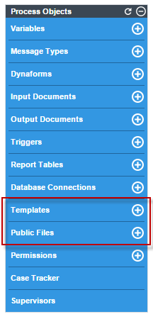
Public Files will store files that can be accessed via triggers or from an URL. In other words, the files in the public directory are publicly accessible (if the ProcessMaker server has a publicly accessible IP number or domain name).
Templates can be created as public files, but the difference from other public files is that templates are used to send emails and other objects and public files are meant to be viewed in processes created in ProcessMaker.
Click on Templates to obtain more information.
Creating Public Files
To create a file, go to the Process Objects toolbox located at the right side of the screen and hover the pointer of the mouse over the + symbol next to the Public Files option. The Create option will displayed to the left:
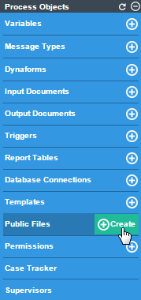
Enter the name of the file in the Filename field without the .html extension, since it will be automatically added when saving the file (special characters, such as !·$%&(()=, are not accepted). Then edit the content of the file with the WYSIWYG Html Editor.
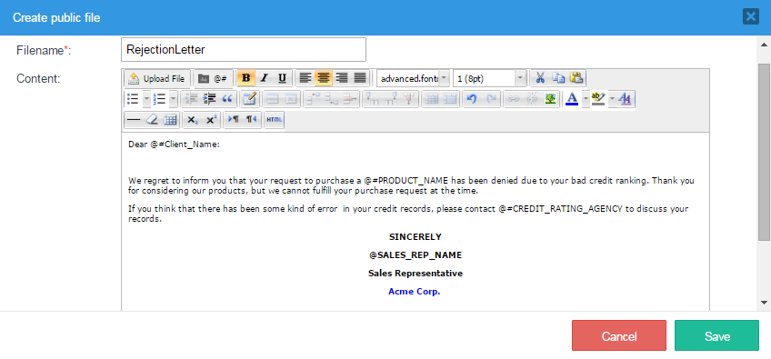
In the Content section of the creation window, click on the HTML button and the HTML Source Editor will open.

Add the preferred code and save it by clicking on Update.

The content created in the HTML editor window will be rendered in the previous graphical editor. The image below shows the HTML code working perfectly. To finish the creation of the file, click on Save.
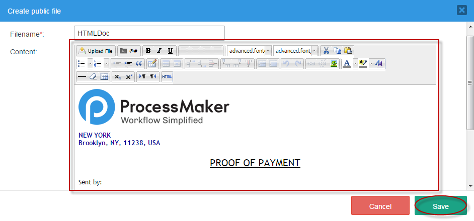
To discard the creation of the new file, click on the Cancel button. To save the file, click on the Save button and a flash message will confirm that it has been saved.
Managing Public Files
To view the content in the public directory, click on the Public Files option in the Process Objects toolbox.
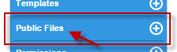
A list of all public files will be displayed.
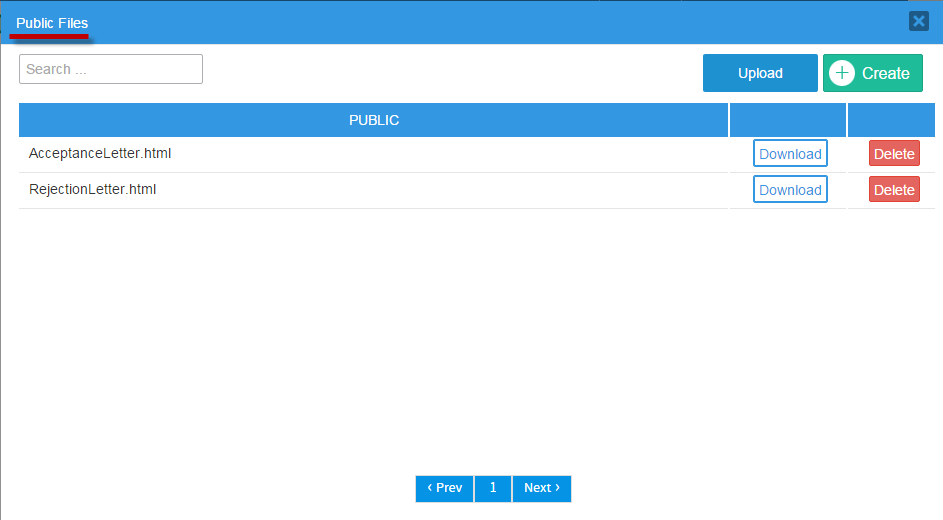
Every part of this modal window will be explained next:
- Search: Search for a public file by entering its name into the Search field. The Search function helps when the list of Public Files is longer than two pages. This field has the auto-complete property, which lists all matching files immediately as the text is entered, and removes irrelevant files from the list. For example, if the public file named "ServiceContract" is needed, type "Service..." and only the file required will appear.
Upload: Click on this button to upload a file from your computer to ProcessMaker. This option is useful if the file was created by an external HTML editor, such as DreamWeaver or BlueGriffon. For instance, try uploading an HTML file. Click on Upload and a window named Upload File will open. Choose the file from your computer and open it.
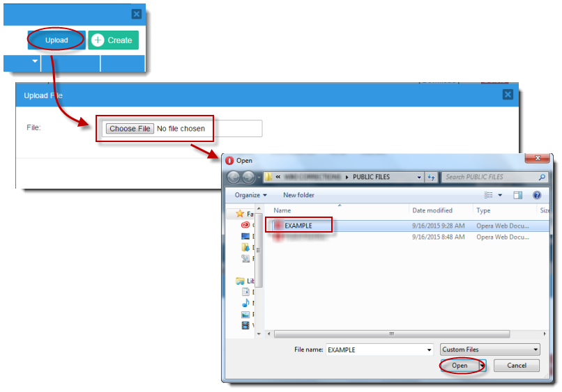
After clicking on Open, the file "EXAMPLE" becomes available in the Upload File window.
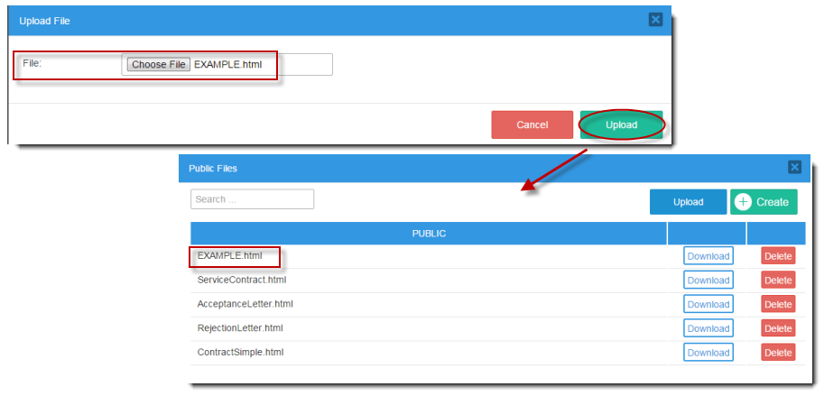
- Create: Click on this button to create a new file.
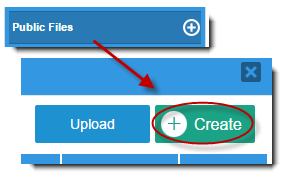
Remember not to write the file extension, since it will be added automatically. For example, create a new Public File by clicking directly on the Create button. A modal window will appear. After filling in the necessary information about the new file, click on Save and a message saying that the file has been saved successfully will be shown. The new file will appear in the Public Files window.

- Public: This column lists the files created with the editor or uploaded as public files.
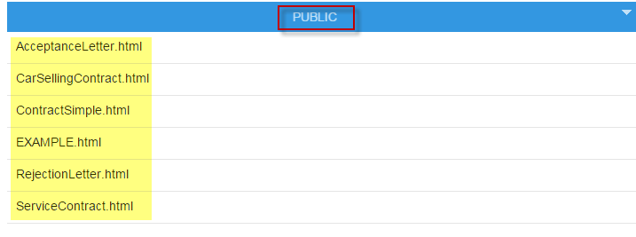
- Download: Click on this button to download a file to your computer.
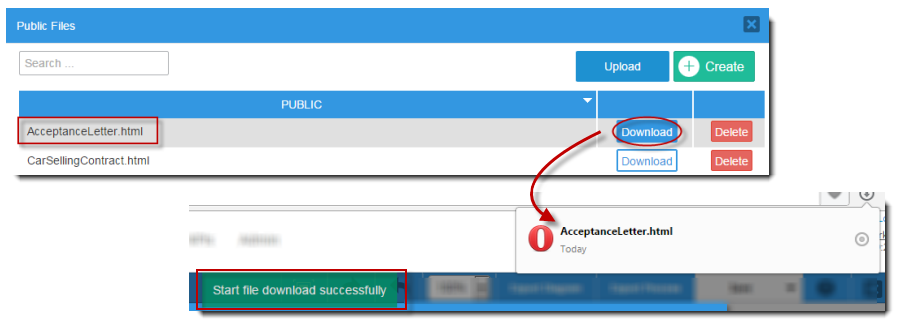
A flash message indicating that the file was downloaded successfully will appear at the top of the window. Check the Downloads folder on the PC for the file.
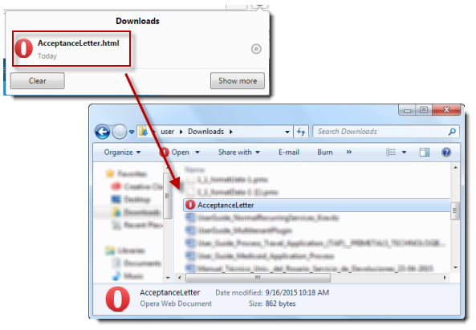
- Delete: Click this button to delete a file. After choosing the file and clicking Delete, a message will ask the user if the file should be deleted. Wait a few moments and the file will be deleted from the Public File list.

- Pagination control: Use this control to navigate through the pages, which show 10 templates per page.


Uploading Files
This option allows users to upload their own files. Go to the Public Files option in the Process Objects toolbox and click on the Upload button. The following window will open where an .html file can be selected.
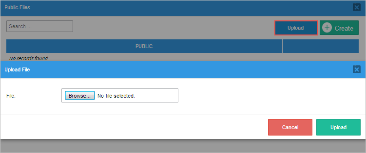
To upload a file, click the Browse button. The following window will open to select a .html file.

Change the option to All files to choose a file with a different extension.

Once the file is selected, click on the Upload button to add it to the public files directory.
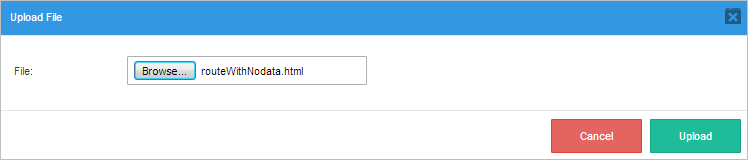
Note that the option to upload PHP files may have been disabled in the env.ini configuration of the workspace or the ProcessMaker instance with the disable_php_upload_execution flag. Therefore, if the user tries to upload a PHP file as a public file, the following error message will be displayed.
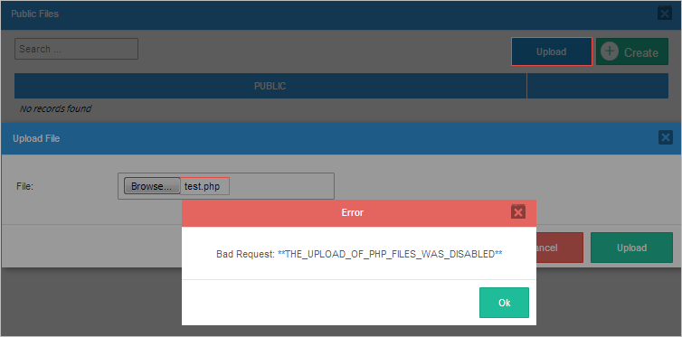
Accessing Public Files
To access a file placed in the Public Files directory, direct a web browser to the following link:
http://IP-ADDRESS/sysWORKSPACE/LANGUAGE/SKIN/PROCESS-UID/FILENAME
For example, ProcessMaker is installed at the IP address 192.168.1.100, using the default "workflow" workspace, the default "en" (English) language, and the default "neoclassic" skin. To link to the file "quarterReport.xls" in a process with a UID of "40825258848d67d3d5d1d52083561715":
http://192.168.1.100/sysworkflow/en/neoclassic/40825258848d67d3d5d1d52083561715/quarterReport.xls
The complete URL should be used when linking to files in email and output document templates, but relative links can be used for link controls in Dynaforms:
../PROCESS-UID/FILENAME
For example:
../40825258848d67d3d5d1d52083561715/quarterReport.xls
Note: A public file in one process can be accessed by cases in all the other processes, so it is only necessary to upload the file in one process. In fact, it is publicly accessible to anyone who can access the ProcessMaker server via the local network or Internet, so do NOT store any sensitive files in the Public File directory.
Finding the Process Unique ID
There are several ways to find the unique ID of a process:
- Enable Debug Mode for the process where the file is stored.
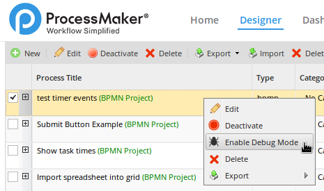
Then, open a case in that process to see the system variables in the Debugger. Copy the value of thePROCESSsystem variable, which holds the unique ID of the current process.

- Another way to see a list of all the processes and their unique IDs is to enter MySQL and use the following SQL query in the wf_WORKSPACE database:
SELECT CON_VALUE, CON_ID FROM CONTENT WHERE CON_CATEGORY='PRO_TITLE'
For example:
$ mysql -u root -p Enter password: mysql> use wf_workflow; Database changed mysql> SELECT CON_VALUE, CON_ID FROM CONTENT WHERE CON_CATEGORY='PRO_TITLE'; +-----------------------------------------+----------------------------------+ | CON_VALUE | CON_ID | +-----------------------------------------+----------------------------------+ | Submit Button Example | 2315624695834bb40313bd7050809190 | | check next user | 311327459582a2542278d78034906545 | | Show task times | 330217894583375317ac610007521713 | | test timer events | 40699414058363d3b8088c8098453284 | | test large grids | 543390430574cf747622362087598387 | | Copy of - check routing - Nov 14, 21:39 | 555340659582a2efa26c879010779689 | | check routing | 657967087576d7e739cc1b3055805038 | | consume web service | 757495385582a55d3da9948047551658 | | Import spreadsheet into grid | 913724609582f861e8a7fd8021418245 | +-----------------------------------------+----------------------------------+ 9 rows in set (0.00 sec)
Generating Links Dynamically in Templates
If creating a link to a file in the Public File directory of the current process, the link can be generated using ProcessMaker's system variables in an email or output document template:
http://IP-ADDRESS/sys@#SYS_SYS/@#SYS_LANG/@#SYS_SKIN/@#PROCESS/FILENAME/
Note: If the file is stored in the public directory of a different process, then the unique ID of that process will have to be used in place of the @@PROCESS variable.
For example, Acme Inc. uses the following email template to include a link to a file named "clientContract.doc", which is stored in the public directory of the current process:
Please review the details for your contract:
http://www.acme.com/sys@#SYS_SYS/@#SYS_LANG/@#SYS_SKIN/@#PROCESS/clientContract.doc
Best Regards,
Wiley E.
<p>Please review the details for your contract:<br>
<a href="http://www.acme.com/sys@#SYS_SYS/@#SYS_LANG/@#SYS_SKIN/@#PROCESS/clientContract.doc">http://www.acme.com/sys@#SYS_SYS/@#SYS_LANG/@#SYS_SKIN/@#PROCESS/clientContract.doc</a></p>
<p>Best Regards,<br>
Wiley E.</p>
URLs in HTML Links and Images
System variables can also be used to construct the URL inside of HTML links <a href="url">label</a> and images <img src="url"> in templates.
For example, Acme uses the following output document template to display the company letterhead and provide a link to its human resources policies:
<p>Dear @#EmployeeName,</p>
<p>Please review our <a href="http://www.acme.com/sys@#SYS_SYS/@#SYS_LANG/@#SYS_SKIN/@#PROCESS/HRPolicies.doc">Human Resources Policies</a>
before the next personnel meeting at @#MeetingTime on @#MeetingDate.</p>
<p>Sincerely,<br>
@#ManagerName</p>
Remember that inserted images should be hosted on a server with public access, otherwise loading issues might occur when viewing the email or document outside of ProcessMaker.
Generating Links Dynamically in Triggers
To create a link to a file in the process's Public File directory using a trigger, PHP's $_SERVER superglobal and ProcessMaker's system variables can be used to dynamically generate the link. For example, if creating a link to a file named "userList.txt":
@@SYS_LANG .'/'. @@SYS_SKIN .'/'. @@PROCESS .'/userList.txt';
@@userListLabel = "userList.txt";
The case variables @#userListUrl and @#userListLabel can then be used in the HTML code for an email or output document template like this:
To set the URL in a Link control in a Dynaform, then place the @@userListUrl variable in the href property and the @@userListLabel in the display text property of the link control.
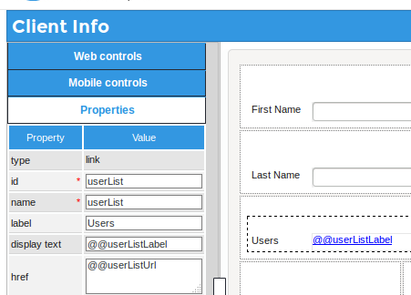
Opening Public Files in Triggers
PHP's file_get_contents() function can be used to open a file in the Public File directory. file_get_contents() accepts either web addresses or paths to files stored on the server's file system. To construct the file path to the public directory, use the defined constants PATH_DATA_PUBLIC and PATH_SEP, which are defined in the workflow/public_html/sysGeneric.php file. PATH_DATA_PUBLIC has a value like "/opt/processmaker/shared/sites/workflow/public/" or "C:\opt\ProcessMaker-3.0.1.8\processmaker\shared\sites\workflow\public" and PATH_SEP is "/" on a Linux/UNIX server and "\" on a Windows server.
For example, to extract the contents of a file named "formLetterContents.html" in the public directory of the current process and assign it to a variable named "formContents", which is inserted into an email template and sent out with the PMFSendMessage() function:
PMFSendMessage(@@APPLICATION, 'boss@acme.com', 'wiley@acme.com', '', '', 'Form Letter', 'formLetter.html',
array('formContents' => $formContents));
Similarly, the contents of the file "formLetterContents.html" can be displayed inside of a Textarea control associated with the variable "formContents" in a Dynaform. Fire the following trigger before the Dynaform that has the textarea:
After the user has edited the contents of the "formContents" textarea and submitted the Dynaform, fire another trigger to send out the edited contents in an email:
array('formContents' => @@formContents));
File Storage
Files that are uploaded to the Public Files directory are stored in the following path on the ProcessMaker server:
INSTALL-DIRECTORY/shared/sites/WORKSPACE/public/PROCESS-UID/FILENAME
For example, the file clientform.html in the Public Files directory of the process 371ac73734d824385011f94010814136 in the default "workflow" workspace might be found at:
In Linux:
/opt/processmaker/shared/sites/workflow/public/3713073734d824385011f94010814136/clientform.html
In Windows with the Bitnami installer in ProcessMaker between versions 3.0.1.8 and 3.3.X:
C:\Bitnami\processmaker-3.0.1.8\apps\processmaker\shared\sites\workflow\public\3713073734d824385011f94010814136\clientform.html
In Windows with the automatic installer in ProcessMaker version 3.0.1.7 and earlier:
C:\Users\USERNAME\AppData\Roaming\ProcessMaker-3_0_1_7\processmaker\sites\workflow\public\3713073734d824385011f94010814136\clientform.html
Unlike attached case files, input documents, and output documents, which have to be registered in the MySQL database, files in the Files Manager are not registered in the MySQL database and can can be copied directly to the public/PROCESS-UID directory. To copy files to these directories from a remote computer, Filezilla or pscp can be used from a Windows machine and Nautilus or scp can be used from a Linux/UNIX machine.